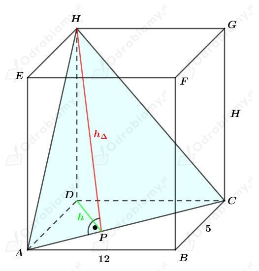
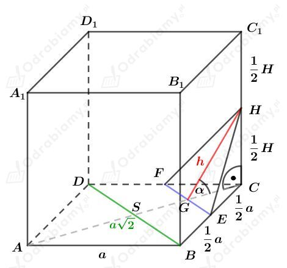
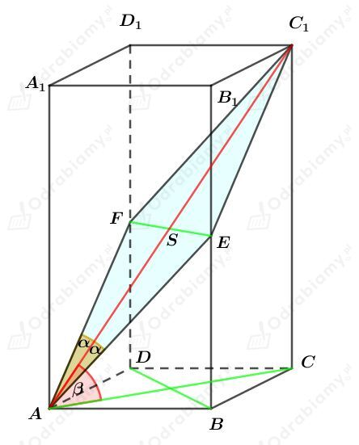

Rysunek:

Korzystając z twierdzenia Pitagorasa dla trójkąta ACD otrzymujemy:
Wiedząc, że pole trójkąta ACH jest równe 84,5 cm2, otrzymujemy:
Rozważmy trójkąt prostokątny ACD. Korzystając z podanego wzoru
| Długość wysokości h opuszczonej na przeciwprostokątną c w trójkącie prostokątnym opisuje wzór |
mamy:
Korzystając z twierdzenia Pitagorasa dla trójkąta DPH mamy:
Wyznaczmy objętość tego prostopadłościanu. Mamy:
Rysunek:

Zauważmy, że
oraz
a)
Wiemy, że pole trójkąta FEH jest równe
zatem mamy:
Wyznaczmy cosinus kąta 𝛼 mamy:
zatem
Korzystając z funkcji tangens dla trójkąta GCH mamy:
Wyznaczmy objętość tego graniastosłupa. Mamy:
b)
Wiemy, że pole trójkąta FEH jest równe
zatem mamy:
Wyznaczmy cosinus kąta 𝛼 mamy:
zatem
Korzystając z funkcji tangens dla trójkąta GCH mamy:
Wyznaczmy objętość tego graniastosłupa. Mamy:
Rysunek:

Czworokąt AEC1F jest rombem.
Zauważmy, że
Rozważmy trójkąt prostokątny ASE. Wyznaczmy tangens kąta 𝛼. Mamy:
Rozważmy trójkąt prostokątny ACC1. Wyznaczmy cosinus kąta 𝛽. Mamy: